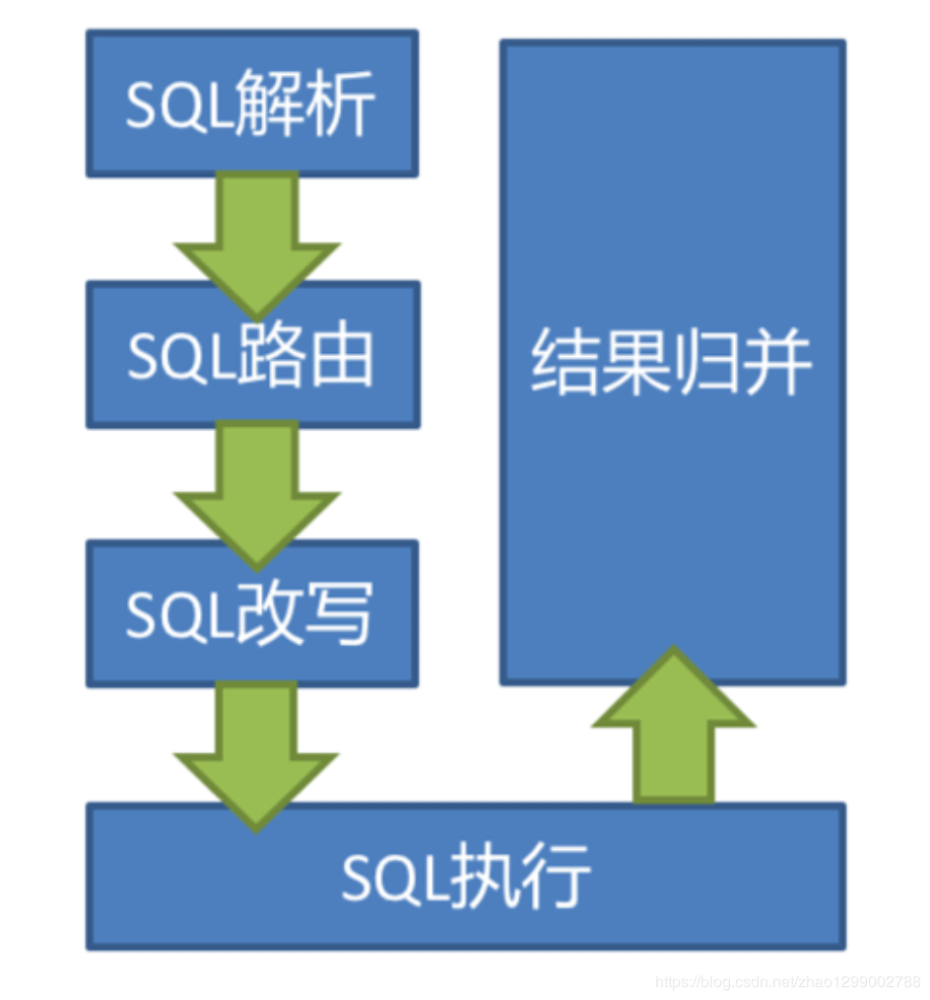
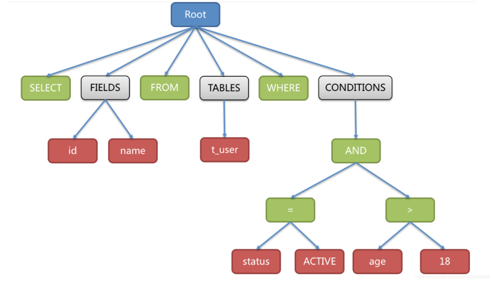
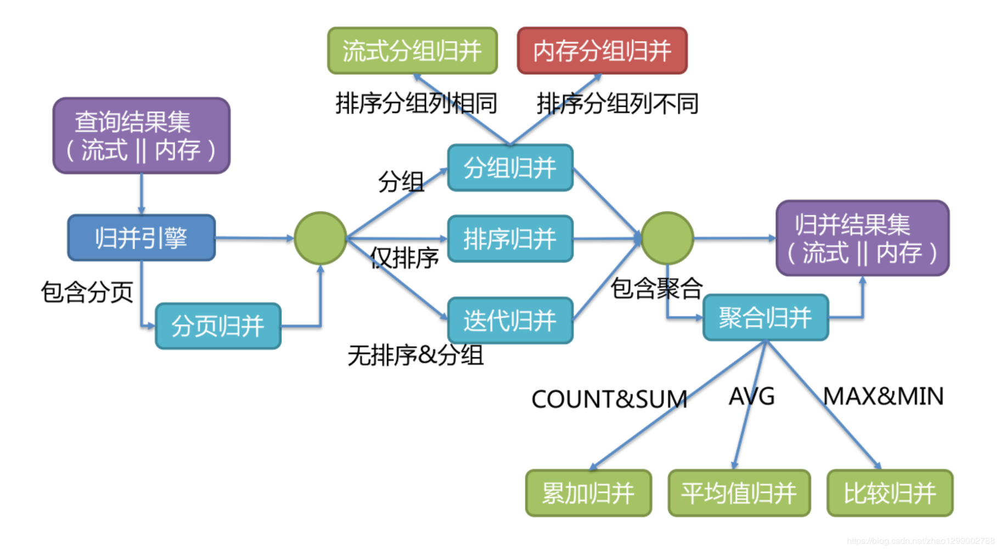
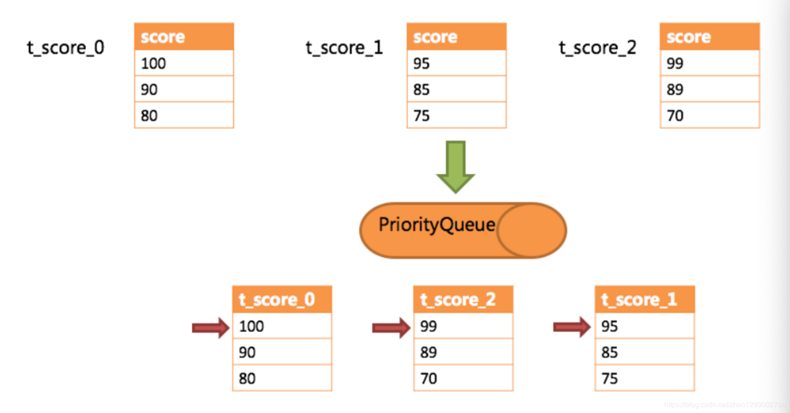
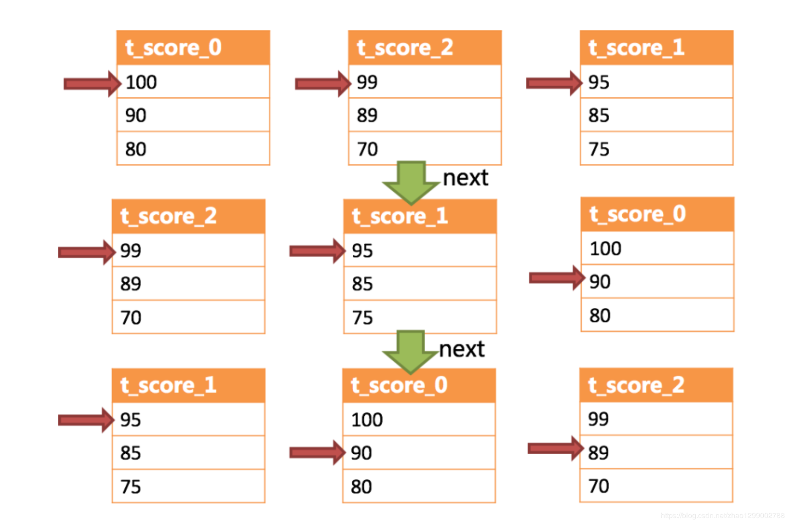

在了解Sharding-JDBC的执行原理前，需要了解以下概念 ：
逻辑表
水平拆分的数据表的总称。例 ：订单数据表根据主键尾数拆分为1-张表，分别是t_order_0、t_order_1到t_order_9，他们的逻辑表名为t_order。
真实表
在分片的数据库中真实存在的物理表。即上个实例中的t_order_0到t_order_9。
数据节点
数据分片的最小物理单元。由数据源名称和数据表组成，例如 ：ds_0.t_order_0。
绑定表
指分片规则一致的主表和子表。例如 ：t_order表和t_order_item表，均按照order_id分片，绑定表之间的分区键完全相同，则此两张表互为绑定表关系。绑定表之间的多表关联查询不会出现笛卡尔积关联，关联查询效率将大大提升。举例说明，如果SQL为 ：
SELECT i.* FROM t_order o JOIN t_order_item i ON o.order_id=i.order_id WHERE o.order_id in (10, 11);
在不配置绑定表关系时，假设分片键order_id将数值10路由至第0片，将数值11路由至第1片，那么路由后的SQL应该为4条，它们呈现为笛卡尔积 ：
SELECT i.* FROM t_order_0 o JOIN t_order_item_0 i ON o.order_id=i.order_id WHERE o.order_id in (10, 11);
SELECT i.* FROM t_order_0 o JOIN t_order_item_1 i ON o.order_id=i.order_id WHERE o.order_id in (10, 11);
SELECT i.* FROM t_order_1 o JOIN t_order_item_0 i ON o.order_id=i.order_id WHERE o.order_id in (10, 11);
SELECT i.* FROM t_order_1 o JOIN t_order_item_1 i ON o.order_id=i.order_id WHERE o.order_id in (10, 11);
在配置绑定表关系后，路由的SQL应该为2条 ：
SELECT i.* FROM t_order_0 o JOIN t_order_item_0 i ON o.order_id=i.order_id WHERE o.order_id in
(10, 11);
SELECT i.* FROM t_order_1 o JOIN t_order_item_1 i ON o.order_id=i.order_id WHERE o.order_id in
(10, 11);
广播表
指所有的分片数据源中都存在的表，表结构和表中的数据在每个数据库中均完全一致。适用于数据量不大且需要与海量数据的表进行关联查询的场景，例如 ：字典表。
分片键
用于分片的数据库字段，是将数据库（表）水平拆分的关键字段。例如 ：将订单表中的订单主键的尾数取模分片，则订单主键为分片字段。SQL中如果无分片字段，将执行全路由，性能较差。除了对单分片字段的支持，Sharding-JDBC也支持根据多个字段进行分片。
分片算法
通过分片算法将数据分片，支持通过=、BETWZEEN和IN分片。分片算法需要应用方开发者自行实现，可实现的灵活度非常高。包括 ：精确分片算法、范围分片算法、复合分片算法等。例如 ：where order_id = ？将采用精确分片算法，where order_id in （？，？，？）将采用精确分片算法，where order_id BETWEEN ？and ？将采用范围分片算法，复合分片算法用于分片键有多个复杂情况。
分片策略
包含分片键和分片算法，由于分片算法的独立性，将其独立抽离。真正可用于分片操作的是分片键 + 分片算法，也就是分片策略。内置的分片策略大致可分为尾数取模、哈希、范围、标签、时间等。由用户方配置的分片策略则更加灵活，常用的使用行表达式配置分片策略，它采用Groovy表达式表示 ：如 ：t_user_$->{u_id % 8}表示t_user表根据u_id摸8，而分成8张表，表名称为t_user_0到t_user_7。
自增主键生成策略
通过在客户端生成自增主键替换以数据库原生自增主键的方式，做到分布式主键无重复。
当Sharding-JDBC接受到一条SQL语句时，会陆续执行SQL解析 =》查询优化 =》SQL路由 =》SQL改写 =》结果归并，最终返回执行结果。

SQL解析过程分为词法解析和语法解析。词法解析器用于将SQL拆解为不可再分的院子符号，称为Token。并根据不同数据库方言所提供的字典，将其归类为关键字、表达式、字面量和操作符。再使用语法解析器将SQL转换为抽象语法树。
例如，以下SQL：
SELECT id, name FROM t_user WHERE status = 'ACTIVE' AND age > 18
解析之后的为抽象语法树见下图 ：

为了便于理解，抽象语法树中的关键字的Token用绿色表示，变量的Token用红色表示，灰色表示需要进一步拆分。
最后，通过对抽象语法树的遍历去提炼分片所需的上下文，并标记有可能需要SQL改写（后边介绍）的位置。供分片使用的解析上下文包含查询选择项（Select Items）、表信息（Table）、分片条件（Sharding Condition）、自增主键信息（Auto increment Primary Key）、排序信息（Order By）、分组信息（Group By）以及分页信息（Limit、Rownum、Top）。
SQL路由就是把针对逻辑表的数据操作映射到对数据结点操作的过程。
根据解析上下文匹配数据库和表的分片策略，并生成路由路径。对于携带分片键的SQL，根据分片键操作符不同可以划分为单片路由（分片键的操作符是等号）、多片路由（分片键的操作符是IN）和范围路由（分片键的操作符是BETWEEN），不携带分片键的SQL则采用广播路由。根据分片键进行路由的场景可分为直接路由、标准路由、笛卡尔积路由等。
标准路由
标准路由是Sharding-JDBC最为推荐使用的分片方式，它的使用范围是不包含关联查询或仅包含绑定表之间关联查询的SQL。当分片运算符是等于号时，路由结果将落入单库（表），当分片运算符是BETWEEN或IN时，则路由结果不一定落入唯一的库（表），因此这条逻辑SQL最终可能被拆分为多条用于执行的真实SQL。举例说明，如果按照order_id的奇数和偶数进行数据分片，一个单表查询的SQL如下 ：
SELECT * FROM t_order WHERE order_id IN (1, 2);
那么路由的结果应为 ：
SELECT * FROM t_order_0 WHERE order_id IN (1, 2);
SELECT * FROM t_order_1 WHERE order_id IN (1, 2);
绑定表的关联查询与单表查询复杂度和性能相当。举例说明，如果一个包含绑定表的关联查询的SQL如下 ：
SELECT * FROM t_order o JOIN t_order_item i ON o.order_id=i.order_id WHERE order_id IN (1, 2);
那么路由的结果应为 ：
SELECT * FROM t_order_0 o JOIN t_order_item_0 i ON o.order_id=i.order_id WHERE order_id IN (1, 2);
SELECT * FROM t_order_1 o JOIN t_order_item_1 i ON o.order_id=i.order_id WHERE order_id IN (1, 2);
可以看到，SQL拆分的数目与单表是一致的。
笛卡尔路由
笛卡尔路由是最复杂的情况，它无法根据绑定表的关系定位分片规则，因此非绑定表之间的关联查询需要拆解为笛卡尔积组合执行。如果上个示例中的SQL并未配置绑定表关系，那么路由的结果应为 ：
SELECT * FROM t_order_0 o JOIN t_order_item_0 i ON o.order_id=i.order_id WHERE order_id IN (1, 2);
SELECT * FROM t_order_0 o JOIN t_order_item_1 i ON o.order_id=i.order_id WHERE order_id IN (1, 2);
SELECT * FROM t_order_1 o JOIN t_order_item_0 i ON o.order_id=i.order_id WHERE order_id IN (1, 2);
SELECT * FROM t_order_1 o JOIN t_order_item_1 i ON o.order_id=i.order_id WHERE order_id IN (1, 2);
笛卡尔路由查询性能较低，需谨慎使用。
全库表路由
对于不携带分片键的SQL，则采用广播路由的方式。根据SQL类型又可以划分为全库表路由、全库路由、全实例路由、单播路由和阻断路由这5种类型。其中全库表路由用于处理对数据库中与其逻辑表相关的所有真实表的操作，主要包括不带分片键的DQL（数据查询）和DML（数据操纵），以及DDL（数据定义）等。例如 ：
SELECT * FROM t_order WHERE good_prority IN (1, 10);
则会遍历所有数据库中的所有表，逐一匹配逻辑表和真实表名，能够匹配得上则执行。路由后成为
SELECT * FROM t_order_0 WHERE good_prority IN (1, 10);
SELECT * FROM t_order_1 WHERE good_prority IN (1, 10);
SELECT * FROM t_order_2 WHERE good_prority IN (1, 10);
SELECT * FROM t_order_3 WHERE good_prority IN (1, 10);
工程师面向逻辑表书写的SQL，并不能够直接在真实的数据库中执行，SQL改写用于将逻辑SQL改写为在真实数据库中可以正确执行的SQL。
如一个简单的例子，若逻辑SQL为 ：
SELECT order_id FROM t_order WHERE order_id=1;
假设该SQL配置分片键order_id，并且order_id=1的情况，将路由至分片表1。那么改写之后的SQL应该为 ：
SELECT order_id FROM t_order_1 WHERE order_id=1;
再比如，Sharding-JDBC需要在结果归并时获取相应数据，但该数据并未能通过查询的SQL返回。这种情况主要是针对GROUP BY和ORDER BY。结果归并时，需要根据GROUP_BY和ORDER_BY的字段项进行分组和排序，但如果原始SQL的选择项中若并未包含分组项或排序项，则需要对原始SQL进行改写。先看一下原始SQL中带有结果归并所需信息的场景 ：
SELECT order_id, user_id FROM t_order ORDER BY user_id;
由于user_id进行排序，在结果归并中需要能够获取到user_id的数据，而上面的SQL是能够获取到user_id获取的，因此无需补列。
如果选择项中不包含结果归并时所需的列，则需要进行补列，如以下SQL ：
SELECT order_id FROM t_order ORDER BY user_id;
由于原始SQL中并不包含需要在结果归并中需要获取的user_id，因此需要对SQL进行补列改写。补列之后的SQL
SELECT order_id, user_id AS ORDER_BY_DERIVED_0 FROM t_order ORDER BY user_id;
将从各个数据节点获取的多数据结果集，组合成为一个结果集并正确的返回至请求客户端，称为结果归并。
Sharding-JDBC支持的结果归并从功能上可分为遍历、排序、分组、分页和聚合5种类型，它们是组合而非互斥的关系。
归并引擎的整体结构划分如下图 。

结果归并从结构划分可分为流式归并、内存归并和装饰者归并。流式归并和内存归并是互斥的，装饰者归并可以在流式归并和内存归并之上做进一步的处理。
内存归并很容易理解，他是将所有分片结果集的数据都遍历并存储在内存中，再通过统一的分组、排序以及聚合等计算之后，再将其封装成为逐条访问的数据结果集返回。
流式归并是指每一次从数据库结果集中获取到的数据，都能够通过游标逐条获取的方式返回正确的单条数据，它与数据库原生的返回结果集的方式最为契合。
下边举例说明排序归并的过程，如下图是一个通过分数进行排序的示例图，它采用流式归并方式。图中展示列3张表返回的数据结果集，每个数据结果集已经根据分数排序完毕，但是3个数据结果集之间是无序的。将3个数据结果集的当前游标指向的数据值进行排序，并放入优先级队列，t_score_0的第一个数据值最大，t_score_2的第一个数据值次之，t_score_1的第一个数据值最小，因此优先级队列根据t_score_0、t_score_2和t_score_1的方式排序队列。

下图则展现了进行next调用的时候，排序归并是如何进行的。通过图中我们可以看到，当进行第一次next调用时，排在队列首位的t_score_0将会被弹出队列，并且将当前游标指向的数据值（也就是100）返回至查询客户端，并且将游标下移一位之后，重新放入优先级队列。而优先级队列也会根据t_score_0的当前数据结果集指向游标的数据值（这里是90）进行排序，根据当前数值，t_score_0排列在队列的最后一位。之前队列中排名第二的t_score_2的数据结果集则自动排在队列首位。
在进行第二次next时，只需要将目标排列在队列首位的t_score_2弹出队列，并且将其数据结果集游标指向的值返回至客户端，并下移游标，继续加入队列排队，以此类推。当一个结果集中已经没有数据了，则无需再次加入队列。

可以看到，对于每个数据结果集中的数据有序，而多数据结果集整体无序的情况下，Sharding-JDBC无需将所有的数据都加载至内存即可排序。它使用的是流式归并的方式，每次next仅获取唯一正确的一条数据，极大的节省了内存的消耗。
装饰者归并是对所有的结果集归并进行统一的功能增强，比如归并时需要聚合SUM前，在进行聚合计算前，都会通过内存归并或流式归并查询出结果集。因此，聚合归并是在之前介绍的归并类型之上追加的归并能力，即装饰者模式。
通过以上内容介绍，相信大家已经了解到Sharding-JDBC基础概念、核心功能以及执行原理。
基础概念 ：逻辑表、真实表、数据节点、绑定表、广播表、分片键、分片算法、分片策略、主键生成策略
核心功能 ：数据分片、读写分离
执行流程 ：SQL解析 =》查询优化 =》SQL路由 =》SQL改写 =》SQL执行 =》结果归并